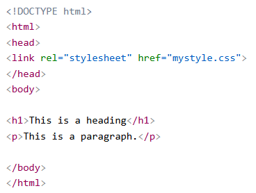
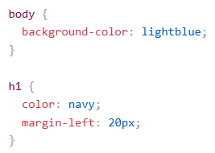
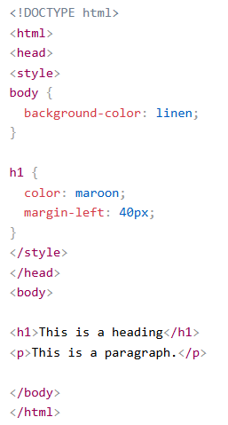
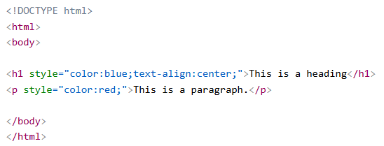

| แบบ | หมายถึง | ตัวอย่าง |
|---|---|---|
| External CSS | External CSS ( CSS ภายนอก )ด้วยสไตล์ชีตภายนอก คุณสามารถเปลี่ยนรูปลักษณ์ของเว็บไซต์ทั้งหมดได้โดยการแก้ไขเพียงไฟล์เดียว!หน้าเว็บ HTML แต่ละหน้าจะต้องมีการอ้างอิงถึงไฟล์สไตล์ชีตภายนอกภายในองค์ประกอบ ภายในส่วน head | ภายในไฟล์ HTML  ภายในไฟล์ CSS  |
| Internal CSS | Internal CSS ( CSS ภายใน ) สามารถใช้สไตล์ชีตภายในได้หากหน้า HTML หน้าใดหน้าหนึ่งมีสไตล์ที่เป็นเอกลักษณ์เฉพาะตัวรูปแบบภายในถูกกำหนดไว้ภายในองค์ประกอบ <style> ซึ่งอยู่ภายในส่วนหัว (head) |  |
| Inline CSS | Inline CSS ( CSS แบบอินไลน์ ) สามารถใช้สไตล์แบบอินไลน์เพื่อกำหนดสไตล์เฉพาะให้กับองค์ประกอบเดียวได้ในการใช้สไตล์แบบอินไลน์ ให้เพิ่มแอตทริบิวต์ style ลงในองค์ประกอบที่เกี่ยวข้อง แอตทริบิวต์ style สามารถบรรจุคุณสมบัติ CSS ใดๆ ก็ได้ |  |